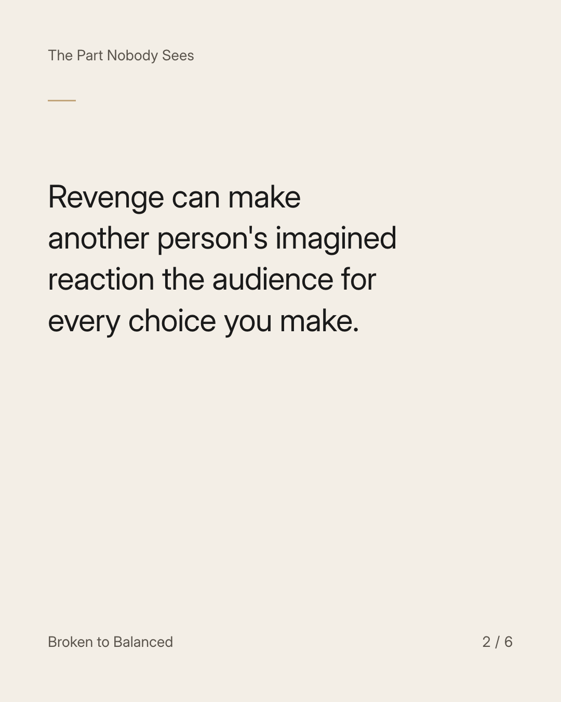
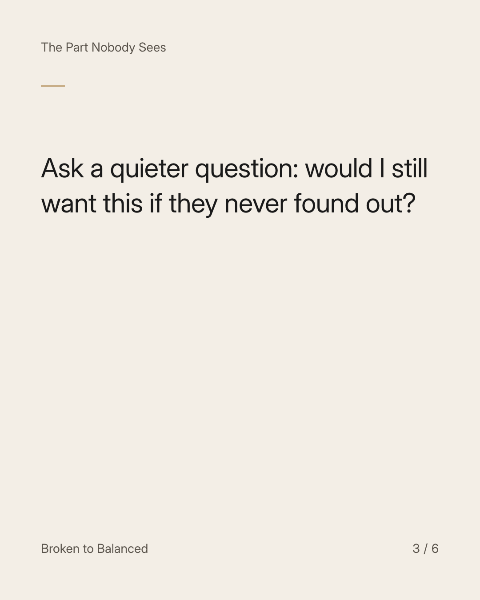
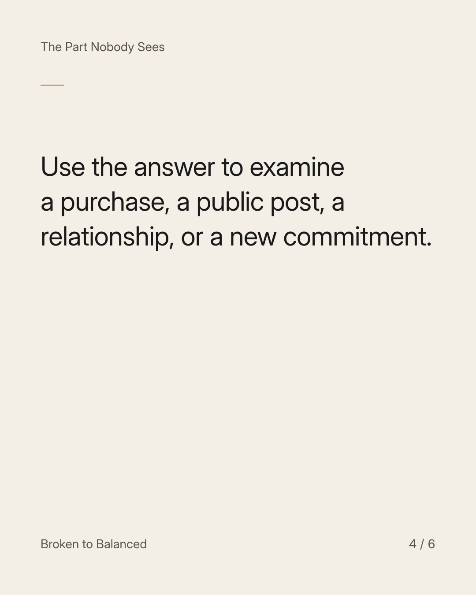
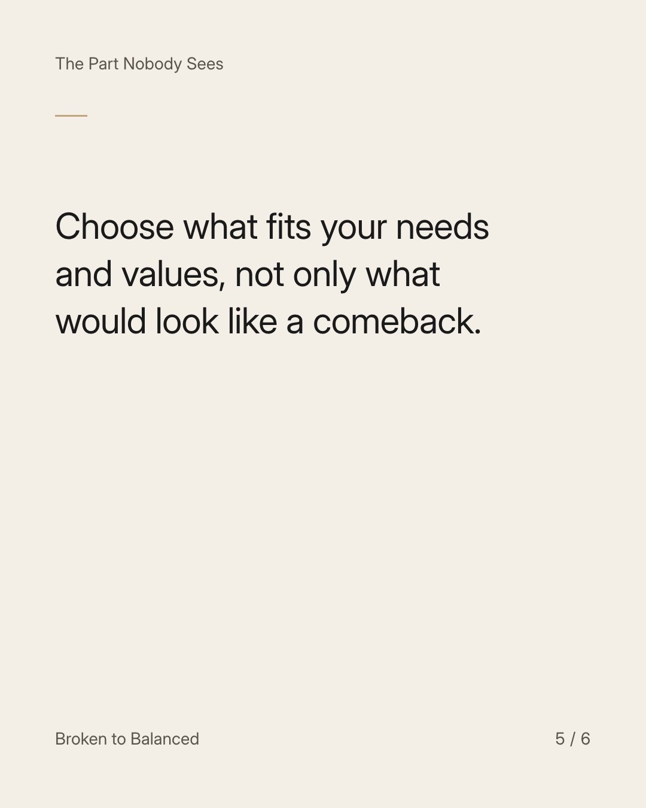
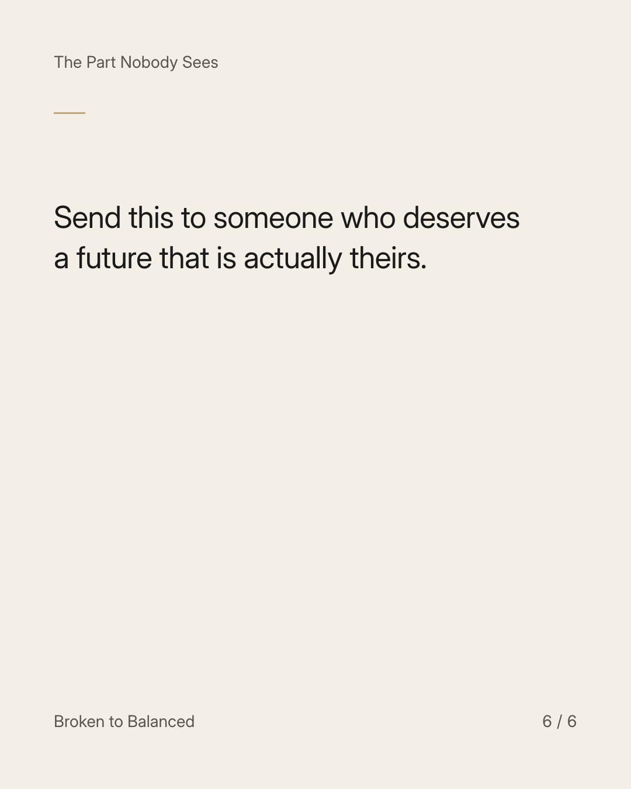

Exact text and accessibility text
You are allowed to build a life that does not prove anyone wrong.
Slide 1 of 6. You are allowed to build a life that does not prove anyone wrong.


Exact text and accessibility text
Revenge can make another person's imagined reaction the audience for every choice you make.
Slide 2 of 6. Revenge can make another person's imagined reaction the audience for every choice you make.


Exact text and accessibility text
Ask a quieter question: would I still want this if they never found out?
Slide 3 of 6. Ask a quieter question: would I still want this if they never found out?


Exact text and accessibility text
Use the answer to examine a purchase, a public post, a relationship, or a new commitment.
Slide 4 of 6. Use the answer to examine a purchase, a public post, a relationship, or a new commitment.


Exact text and accessibility text
Choose what fits your needs and values, not only what would look like a comeback.
Slide 5 of 6. Choose what fits your needs and values, not only what would look like a comeback.


Exact text and accessibility text
Send this to someone who deserves a future that is actually theirs.
Slide 6 of 6. Send this to someone who deserves a future that is actually theirs.
Exact caption
Plain-text fallback: select and copy the caption.